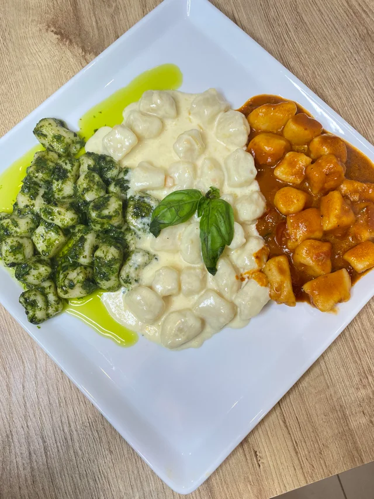

Three Sauce Gnocchi

Ingredients:
- 4-5 potatoes
- 1 egg
- 1 cup flour
- Basil
- Pine nuts
- Garlic
- Olive oil
- Parmesan
- Salt
- Pepper
- Butter
- Heavy cream
- Fresh tomato
- Bay leaves
- Sugar
- Crushed red pepper
Steps:
- Boil potatoes until al dente
- Once potatoes cooked, mash in a bowl, sprinkle salt, add 1 egg, and mix
- Slowly add flour until a dough is formed
- Boil Gnocchi in salt water. Once Gnocchi rises to the surface, it is ready
- Mix basil, pine nuts, garlic, olive oil, parmesan, salt, and pepper in a food processor to make Pesto sauce
- Stir garlic, butter, heavy cream, and parmesan in saucepan to make cheese sauce
- Stir garlic, tomato, basil, bay leaves, crushed red pepper, salt, pepper, and sugar in a pot to make marinara sauce
- Separate gnocchi and plate up with different sauces